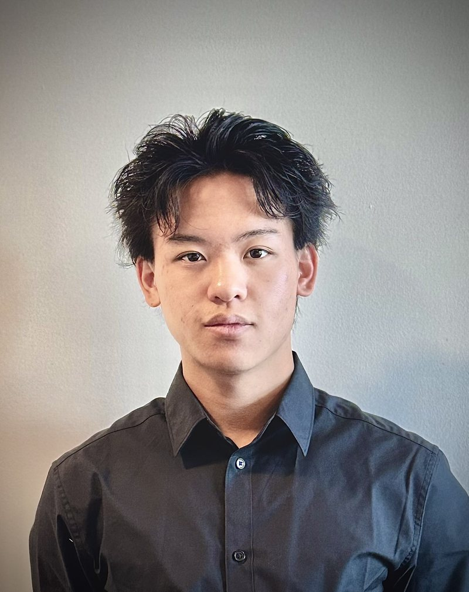

Matthew Wu
I build embedded systems that sense people and respond in real time, then keep testing them until they hold up outside the lab.

- Studying
- B.S. Computer Engineering, Georgia Tech, 2028
- Next
- Engines Engineering co-op, GE Aerospace, Spring 2027
- Focus
- Embedded systems, real-time control, applied AI
- Speaks
- English, Mandarin, Spanish
Projects
Each project is written as a build log: what I set out to do, what broke, and what I changed to get it working. The numbers come at the end.
-
Mar – Apr 2026Personal project
Autonomous monitor tracking system
A monitor that turns to follow me around the room, whether I'm at the desk, on a call, or working out. Vision on a laptop, control on an ESP32.
- 95%
- target lock
- <75 ms
- camera to motion
- 200 Hz
- PID control loop
-
Mar 2026TECHHACK Valley, team of 4, 36 hours
Adaptive wearable gaming controller
A wrist-worn controller for players with limited hand mobility. Wrist gestures become standard gamepad inputs, so it works with games that already exist.
- 98%
- gesture accuracy
- 12 ms
- response latency
- 300 Hz
- sensor fusion rate
-
Jun 2026 – presentPersonal project
AI trading assistant
An LLM trading agent built around discipline, not prediction. Strategies are written in plain English, backtested automatically, and traded behind hard guardrails.
- 5 min
- to validate a strategy, down from 2 hr
- 1,000+
- trades logged
- 15+
- Discord users
-
Nov 2024 – Jan 2025Class project
Arduino task watch
A wearable that checks whether I actually did what I said I would, using GPS to confirm where I am, and a mild shock if I didn't.
- 15 m
- geofence radius
- 8 states
- firmware FSM
- 5
- peripherals coordinated
Abroad
Two summers that shaped how I work with people: teaching and leading in Taiwan, and talking engineering with universities and companies across China.

Summer 2023Foreign Language Education Program
Taiwan
Student body president and lead foreign English teacher. Ran 60+ workshops that trained 750+ educators.
Summer 2025SEEChina Engineering Exchange
China
Communications and data lead. Led discussions at Tsinghua, Peking, Zhejiang, and Fudan, and at Tencent, BYD, Xiaomi, DJI, and XAG.
Toolkit
What I reach for when I build. Most of it shows up in the projects above.
- Embedded
- ESP32, Raspberry Pi, PlatformIO, RISC-V assembly, VHDL, SystemVerilog
- Languages
- C++, Python, Java, JavaScript, MATLAB
- Vision and ML
- OpenCV, PyTorch, Kalman filtering, LLM agents
- Tools
- Git, Linux, Bash, Quartus, Vivado, QuestaSim, Multisim
- Certifications
- AWS Solutions Architect – Associate, AWS AI Practitioner